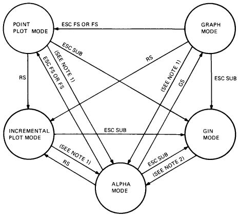

| Chapter 12 | Contents | Chapter 14 |
| Chapter 12 | Contents | Chapter 14 |
The VT300 can support industry-standard Tektronix 4010/4014 software packages. This chapter describes how to select and use 4010/4014 mode. The chapter assumes you have a working knowledge of Tektronix 4010/4014 capabilities.
The 4010/4014 terminals use direct-view storage tube technology. The VT300 uses raster-scan technology. The 4010/4014 mode supports those features that can migrate to a raster terminal.
NOTE: Tektronix software may run differently on the VT300 than on other terminals, due to differences in terminal design.
The 4010/4014 mode supports the following modes and functions. This chapter has a section on each feature.
| Alpha mode | Processes text characters. |
| Graph mode | Processes vectors from endpoints defined by absolute coordinates. |
| Incremental plot mode | Similar to graph mode, but plots points relative to the current cursor position. |
| Point plot mode | Similar to graph mode, but does not draw vectors. Only plots the points specified by absolute coordinates. |
| Graphics input (GIN) mode | A local mode, similar to report position interactive in ReGIS. You can use the keyboard, a mouse, or graphics tablet to move the cursor and send position reports to the host. |
| Strap options | Supported as set-up mode options. See the Graphics Set-Up screen in Installing and Using the VT330/VT340 Video Terminal. |
| Control characters | Supports some control characters to control terminal actions in 4010/4014 mode. |
| Escape sequences | Supports some escape sequences to control 4010/4014 functions only. The way escape sequences work in 4010/4014 mode is independent of the way they work in text mode. |
| Bypass condition | Prevents the terminal from responding to data sent by the terminal and echoed by the host. |
The VT300 cannot support some 4010/4014 features, due to the differences between direct-view storage tube and raster-scan display technologies. The following sections describe these limitations.
With 4010/4014 terminals, you can draw images and characters on the tube without storing them. The application must refresh these images to keep them visible. The intensity level of the images depends on the refresh rate.
The VT300 can simulate write-through functions by using raster writing modes. The "Escape Sequences" section in this chapter describes the capabilities and limitations of raster writing modes.
In 4010/4014 mode, the VT300 uses one of two character modes, aligned or enlarged.
| Aligned mode | The terminal uses four character sizes. The characters in all four sizes are small, but conform to the Tektronix terminal. |
| Enlarged mode | The terminal uses two character sizes. The enlarged characters are larger and easier to read than the smaller aligned characters. |
In enlarged mode, Tektronix software that relies on strict registration of characters to pixels creates character distortion on the VT300. This problem does not occur with aligned characters. Although the smaller aligned characters are more difficult to read, they are not subject to pixel distortion.
NOTE: You can select the aligned or enlarged characters from the Graphics Set-Up screen.
Loadable fonts and alternate hard fonts are not available in 4010/4014 mode.
The Tektronix enhanced graphics module (EGM) is a 4014 option that provides a number of special features. The VT300 supports a number of features available through the EGM option. See "Graph Mode" in this chapter.
The 4010/4014 series terminals use Tekpoints as their unit of screen addressing. By default, there is a 1024 × 768 Tekpoint matrix. Graphics input (GIN) mode uses this default matrix. Other operating modes use the 12-bit addressing capability of the EGM option, increasing the visible matrix to a 4096 × 3072 array.
By contrast, the VT300 has an 800 × 480 pixel matrix. In 4010/4014 mode, the VT300 uses a 623 × 480 pixel array that is centered on the screen. In vector drawing, the VT300 uses a 614 × 460 pixel array. The extra space is used for character drawing.
Because the VT300 has a lower pixel resolution, several Tekpoints map to one pixel. The VT300 maps Tekpoints to the nearest pixel in the 623 × 480 array.
The 4010/4014 terminals have four strap options you can select by moving jumper wires on the terminal's circuit cards.
On the VT300, you can select these strap options from the Graphics Set-Up screen. See Installing and Using the VT330/VT340 Video Terminal for details.
In 4010/4014 mode, the terminal uses 7-bit character codes to communicate with the host. Figure 13-1 shows the standard 7-bit ASCII character set. Not all ASCII characters have a valid function in 4010/4014 mode.
|
|||||||||||||||||||||||||||||||||||||||||||||||||||||||||||||||||||||||||||||||||||||||||||||||||||||||||||||||||||||||||||||||||||||||||||||||||||||||||||||||||||||||||||||||||||||||||||||||||||||||||||||||||||||||||||||||||||||||||||||||||||||||||||||||||||||||||||||||||||||||||||||||||||||||||||||||||||||||||||||||||||||||||||||||||||||||||||||||||||||||||||||||||||||||||||||||||||||||||||||||||||||||||||||||||||||||||||||||||||||||||||||||||||||||||||||||||||||||||||||||||||||||||||||||||||||||||||||||||||||||||||||||||||||||||||||||||||||||||||||||||||||||
|
|||||||||||||||||||||||||||||||||||||||||||||||||||||||||||||||||||||||||||||||||||||||||||||||||||||||||||||||||||||||||||||||||||||||||||||||||||||||||||||||||||||||||||||||||||||||||||||||||||||||||||||||||||||||||||||||||||||||||||||||||||||||||||||||||||||||||||||||||||||||||||||||||||||||||||||||||||||||||||||||||||||||||||||||||||||||||||||||||||||||||||||||||||||||||||||||||||||||||||||||||||||||||||||||||||||||||||||||||||||||||||||||||||||||||||||||||||||||||||||||||||||||||||||||||||||||||||||||||||||||||||||||||||||||||||||||||||||||||||||||||||||||
The function of a valid ASCII character may depend on (1) which 4010/4014 operating mode the terminal is using when the character is received, and (2) whether or not the ASCII character is part of an escape sequence.
Table 13-1 lists the valid ASCII codes for 4010/4014 mode and briefly describes their different functions. Later sections on control characters, escape sequences, and 4010/4014 operating modes provide more details.
| ASCII Character | Operating Mode Value | |||
|---|---|---|---|---|
| Alpha | Graph | Bypass/GIN | LCE Flag* | |
| * The ASCII character performs the function listed when used as part of an escape sequence. The LCE flag is an escape sequence introducer condition. | ||||
| † Filler CRs and filler LFs have no effect. | ||||
| ‡ ESC 0, ESC 1, ESC 2, and ESC 3 are not recommended. These sequences may not be supported in future terminals. Use ESC 8, ESC 9, ESC :, or ESC ; for character size selection. | ||||
| § In graph mode, you can disable the effect of DEL as a low Y character by selecting the "DEL implies low Y" field in the Graphics Set-Up screen. If DEL cannot be used, the program can substitute ESC ?, which performs the same function as DEL. | ||||
| (N) = normal, (B) = bold. | ||||
| NUL | – | – | – | Set LCE. |
| SOH | – | – | – | – |
| STX | – | – | – | – |
| ETX | – | – | – | – |
| EOT | – | – | – | – |
| ENQ | – | – | – | Return terminal status. |
| ACK | – | – | – | – |
| BEL | Ring bell. | Ring bell. | Ring bell. | Ring bell. |
| BS | Left 1 space. | – | – | Left 1 space. |
| HT | Right 1 space. | – | – | Right 1 space. |
| LF | Down 1 line. | – | Down 1 line. | Set LCE.† |
| VT | Up 1 line. | – | – | Up 1 line. |
| FF | – | – | – | Erase and home (page). |
| CR | Move to left margin. | Set alpha and left. | Set alpha and left. | Set LCE.† |
| SO | – | – | – | – |
| SI | – | – | – | – |
| DLE | – | – | – | – |
| DC1 | – | – | – | – |
| DC2 | – | – | – | – |
| DC3 | – | – | – | – |
| DC4 | – | – | – | – |
| NAK | – | – | – | – |
| SYN | – | – | – | – |
| ETB | – | – | – | Make hard copy. |
| CAN | – | – | – | Set bypass. |
| EM | – | – | – | – |
| SUB | – | – | – | Set GIN and bypass. |
| ESC | Set LCE. | Set LCE. | Set LCE. | Set LCE. |
| FS | Set point plot. | Set point plot. | Set point plot. | Set point plot. |
| GS | Set graph and dark vector. | Do a dark vector. | Set graph and dark vector. | Set graph and dark vector. |
| RS | Set incremental plot. | Set incremental plot. | Set incremental plot. | Set incremental plot. |
| US | – | Set alpha mode. | Set alpha mode. | Set alpha mode. |
| Space | Right 1 space. | High X or high Y. | – | – |
| ! | Print character | High X or high Y | – | – |
| " | Print character | High X or high Y | – | – |
| # | Print character | High X or high Y | – | – |
| $ | Print character | High X or high Y | – | – |
| % | Print character | High X or high Y | – | – |
| ' | Print character | High X or high Y | – | – |
| ( | Print character | High X or high Y | – | – |
| ) | Print character | High X or high Y | – | – |
| * | Print character | High X or high Y | – | – |
| + | Print character | High X or high Y | – | – |
| , | Print character | High X or high Y | – | – |
| - | Print character | High X or high Y | – | – |
| . | Print character | High X or high Y | – | – |
| / | Print character | High X or high Y | – | – |
| Aligned Mode | ||||
| 0 | Print character | High X or high Y | – | Smallest size‡ |
| 1 | Print character | High X or high Y | – | Largest size‡ |
| 2 | Print character | High X or high Y | – | Largest size‡ |
| 3 | Print character | High X or high Y | – | Largest size‡ |
| 4 | Print character | High X or high Y | – | – |
| 5 | Print character | High X or high Y | – | – |
| 6 | Print character | High X or high Y | – | – |
| 7 | Print character | High X or high Y | – | – |
| 8 | Print character | High X or high Y | – | Largest size |
| 9 | Print character | High X or high Y | – | Large size |
| : | Print character | High X or high Y | – | Smallest size |
| ; | Print character | High X or high Y | – | Small size |
| Enlarged Mode | ||||
| 0 | Print character | High X or high Y | – | Small size‡ |
| 1 | Print character | High X or high Y | – | Large size‡ |
| 2 | Print character | High X or high Y | – | Large size‡ |
| 3 | Print character | High X or high Y | – | Large size‡ |
| 4 | Print character | High X or high Y | – | – |
| 5 | Print character | High X or high Y | – | – |
| 6 | Print character | High X or high Y | – | – |
| 7 | Print character | High X or high Y | – | – |
| 8 | Print character | High X or high Y | – | Large size |
| 9 | Print character | High X or high Y | – | Large size |
| : | Print character | High X or high Y | – | Small size |
| ; | Print character | High X or high Y. | – | Small size |
| < | Print character | High X or high Y | – | – |
| = | Print character | High X or high Y | – | – |
| > | Print character | High X or high Y | – | – |
| ? | Print character | High X or high Y | – | Low Y for graph |
| @ | Print character | Low X | – | – |
| A | Print character | Low X | – | – |
| B | Print character | Low X | – | – |
| C | Print character | Low X | – | – |
| D | Print character | Low X | – | – |
| E | Print character | Low X | – | – |
| F | Print character | Low X | – | – |
| G | Print character | Low X | – | – |
| H | Print character | Low X | – | – |
| I | Print character | Low X | – | – |
| J | Print character | Low X | – | – |
| K | Print character | Low X | – | – |
| L | Print character | Low X | – | – |
| M | Print character | Low X | – | – |
| N | Print character | Low X | – | – |
| O | Print character | Low X | – | – |
| P | Print character | Low X | – | – |
| Q | Print character | Low X | – | – |
| R | Print character | Low X | – | – |
| S | Print character | Low X | – | – |
| T | Print character | Low X | – | – |
| U | Print character | Low X | – | – |
| V | Print character | Low X | – | – |
| W | Print character | Low X | – | – |
| X | Print character | Low X | – | – |
| Y | Print character | Low X | – | – |
| Z | Print character | Low X | – | – |
| [ | Print character | Low X | – | – |
| \ | Print character | Low X | – | – |
| ] | Print character | Low X | – | – |
| ^ | Print character | Low X | – | – |
| _ | Print character | Low X | – | – |
| ` | Print character | Low Y | – | (N) solid |
| a | Print character | Low Y | – | (N) dotted |
| b | Print character | Low Y | – | (N) dot-dash |
| c | Print character | Low Y | – | (N) short dash |
| d | Print character | Low Y | – | (N) long dash |
| e | Print character | Low Y | – | (N) solid |
| f | Print character | Low Y | – | (N) solid |
| g | Print character | Low Y | – | (N) solid |
| h | Print character | Low Y | – | (B) solid |
| i | Print character | Low Y | – | (B) dotted |
| j | Print character | Low Y | – | (B) dot-dash |
| k | Print character | Low Y | – | (B) short dash |
| l | Print character | Low Y | – | (B) long dash |
| m | Print character | Low Y | – | (B) solid |
| n | Print character | Low Y | – | (B) solid |
| o | Print character | Low Y | – | (B) solid |
| p | Print character | Low Y | – | – |
| q | Print character | Low Y | – | – |
| r | Print character | Low Y | – | – |
| s | Print character | Low Y | – | – |
| t | Print character | Low Y | – | – |
| u | Print character | Low Y | – | – |
| v | Print character | Low Y | – | – |
| w | Print character | Low Y | – | – |
| x | Print character | Low Y | – | – |
| y | Print character | Low Y | – | – |
| z | Print character | Low Y | – | – |
| { | Print character | Low Y | – | – |
| | | Print character | Low Y | – | – |
| } | Print character | Low Y | – | – |
| ~ | Print character | Low Y | – | – |
| DEL | – | Low Y or no-op§ | – | Set LCE. |
You can use a mouse or graphics tablet in 4010/4014 mode. You can use the mouse, tablet, or keyboard arrow keys to move the cursor and send reports in 4010/4014 graphics input (GIN) mode. Chapter 15 describes how to use a mouse or tablet in GIN mode.
Table 13-2 describes the ASCII control characters that the VT300 recognizes in 4010/4014 mode. The terminal ignores other ASCII control characters in this mode. These characters can come from the host or the VT300 keyboard.
NOTE: Tables 13-2 and 13-3 list the location (column and row) of each control character in the ASCII character set (Figure 13-1). The character set provides the octal, decimal, and hex values for each ASCII code.
| Mnemonic | Column/ Row | Name | Action |
|---|---|---|---|
| BEL | 0/7 | Bell | Rings the bell tone (if the bell is enabled), clears the bypass condition, and clears the condition that prevents the terminal from responding to carriage returns. |
| BS | 0/8 | Backspace | Moves the cursor left one position. If the current position is at the left margin, no action occurs. |
| HT | 0/9 | Horizontal tab | Moves the cursor one tab space to the right. If the current position is already at the end of the line, HT causes an automatic line feed and carriage return. |
| LF | 0/10 | Line feed | Moves the cursor down one line. If the cursor is already on the bottom row of the screen, LF moves the cursor to the top of the screen and switches margins. Clears the bypass condition. |
| VT | 0/11 | Vertical tab | Moves the cursor up one line. The cursor stops at the top line. |
| CR | 0/13 | Carriage return | Moves the cursor to the current left margin. Resets the terminal from graph mode to alpha mode. Cancels the crosshair cursor when setting alpha mode, but leaves the terminal with an undefined margin and page full status. Clears the bypass condition. |
| ESC | 1/11 | Escape | Escape sequence introducer. |
| FS | 1/12 | File separator | Selects point plot mode. |
| GS | 1/13 | Group separator | Selects graph mode. |
| RS | 1/14 | Record separator | Selects incremental plot mode. |
| US | 1/15 | Unit separator | Resets terminal from graph mode to alpha mode. Clears the bypass condition. |
To send control characters from the keyboard, you hold down the Ctrl key and press another key. Table 13-3 lists the keys you use to send ASCII control characters from the keyboard.
The terminal buffers and stores control characters received in GIN mode, until the terminal leaves GIN mode.
| Mnemonic | Column/ Row | Key Pressed with Ctrl |
|---|---|---|
| ENQ | 0/5 | E |
| BEL | 0/7 | G |
| BS | 0/8 | H |
| HT | 0/9 | I |
| LF | 0/10 | J |
| VT | 0/11 | K |
| FF | 0/12 | L |
| CR | 0/13 | M |
| ETB | 1/7 | W |
| CAN | 1/8 | X |
| SUB | 1/10 | Z |
| ESC | 1/11 | 3 |
| FS | 1/12 | 4 |
| GS | 1/13 | 5 |
| RS | 1/14 | 6 |
| US | 1/15 | 7 |
The following sections describe the escape sequences you can use in 4010/4014 mode. The terminal ignores any other escape sequences received in this mode. The valid escape sequences can come from the host or the VT300 keyboard.
The sequences contain control characters. To send the control character codes from the keyboard, you hold down the Ctrl key and press another key. Table 13-3 lists the keys to press for each control character.
In GIN mode, the terminal buffers and stores escape sequences, until the terminal exits GIN mode. After exiting GIN mode, the terminal performs the buffered escape sequences.
You can perform the following functions with escape sequences in 4010/4014 mode.
This sequence sets the terminal to the bypass condition and requests the status of the terminal.
| ESC | ENQ |
|---|---|
| 1/11 | 0/5 |
The response of the terminal depends on the current operating mode. In alpha mode, the terminal sends status information and the address of the lower-left corner of the alpha cursor. In graph mode, the terminal sends status information and the address of the current cursor position.
This sequence prints a hard copy of the terminal's bitmap by using the sixel protocol (Chapter 16). The sequence also clears the bypass condition. The sequence only works when a printer is connected to the terminal's printer port.
| ESC | ETB |
|---|---|
| 1/11 | 1/7 |
This sequence selects the bypass condition. In the bypass condition, the VT300 ignores any data received from the host.
| ESC | CAN |
|---|---|
| 1/11 | 1/8 |
This sequence selects alpha mode. Selecting alpha mode erases the screen, moves the current position to the upper-left corner, activates margin 1, and clears the bypass condition.
| ESC | FF |
|---|---|
| 1/11 | 0/12 |
This sequence selects graphics input mode.
| ESC | SUB |
|---|---|
| 1/11 | 1/10 |
This sequence selects point plot mode and sets the pattern register to solid.
| ESC | FS |
|---|---|
| 1/11 | 1/12 |
These sequences let you use raster writing features in alpha and graph modes.
NOTE: These sequences are not part of the 4010/4014 protocol.
| Feature | Sequence | Function | ||||||||
|---|---|---|---|---|---|---|---|---|---|---|
| Overlay mode |
|
Set dots on. | ||||||||
| Erase mode |
|
Sets dots off. | ||||||||
| Complement mode |
|
Complements dots. |
These sequences select character sizes, depending on whether aligned or enlarged characters are selected in Graphics Set-Up. There are four sizes of aligned characters and two sizes of enlarged characters.
NOTE: Digital does not recommend using ESC 0, ESC 1, ESC 2, and ESC 3.
These sequences are not standard Tektronix sequences, and may not be supported
in future terminals. Use ESC 8, ESC 9, ESC :, or ESC ; for character
size selection.
| Sequence | Function | ||||
|---|---|---|---|---|---|
| Aligned Mode | |||||
|
Selects 35 lines of 74 characters each (default). | ||||
|
Selects 38 lines of 81 characters each. | ||||
|
Selects 58 lines of 121 characters each. | ||||
|
Selects 64 lines of 133 characters each. | ||||
|
Selects 64 lines of 133 characters each. | ||||
|
Selects 35 lines of 74 characters each. | ||||
|
Selects 35 lines of 74 characters each. | ||||
|
Selects 35 lines of 74 characters each. | ||||
| Enlarged Mode | |||||
|
Selects 24 lines of 69 characters each (default). | ||||
|
Selects 24 lines of 69 characters each. | ||||
|
Selects 47 lines of 125 characters each. | ||||
|
Selects 47 lines of 125 characters each. | ||||
|
Selects 47 lines of 125 characters each. | ||||
|
Selects 24 lines of 69 characters each. | ||||
|
Selects 24 lines of 69 characters each. | ||||
|
Selects 24 lines of 69 characters each. | ||||
These sequences select the type of pattern the terminal uses for vector drawing.
| Sequence | Pattern | Intensity | ||||
|---|---|---|---|---|---|---|
|
Solid | Normal | ||||
|
Dotted | Normal | ||||
|
Dot-dash | Normal | ||||
|
Short dash | Normal | ||||
|
Long dash | Normal | ||||
|
Solid | Normal | ||||
|
Solid | Normal | ||||
|
Solid | Normal | ||||
|
Solid | Bold | ||||
|
Dotted | Bold | ||||
|
Dot-dash | Bold | ||||
|
Short dash | Bold | ||||
|
Long dash | Bold | ||||
|
Solid | Bold | ||||
|
Solid | Bold | ||||
|
Solid | Bold |
These sequences prevent the terminal from responding to carriage returns (CRs) or line feeds (LFs).
|
Prevents the terminal from responding to carriage returns. | ||||
|
Prevents the terminal from responding to line feeds. |
After you send these sequences, the terminal does not process any CRs or LFs until it receives a BEL (or some other no-operation control code). Your application can use these escape sequences, if your operating system environment prefers shorter lines and tends to insert CR and LF as fillers.
You can use any of these sequences to set the LCE flag. The LCE flag is an escape sequence introducer condition.
|
Sets the LCE flag. | ||||
|
Sets the LCE flag. | ||||
|
Sets the LCE flag. | ||||
|
Sets the LCE flag and prevents the terminal from responding to CRs. | ||||
|
Sets the LCE flag and prevents the terminal from responding to LFs. |
The 4010/4014 terminals have a "DEL implies low Y" strap option, that you can turn on or off in the Graphics Set-Up screen of the VT300. (See Installing and Using the VT330/VT340 Video Terminal.) This option lets the terminal interpret the ASCII DEL control character as a possible low Y value in 4010-series coordinate specifications.
Using DEL as a low Y value may cause problems if your operating system uses DEL for synchronization. In such cases, you can use the following sequence as a substitute for the low Y coordinate value of DEL.
| ESC | ? |
|---|---|
| 1/11 | 3/15 |
The VT300 ignores the following control functions in 4010/4014 mode.
| Sequence | Function |
|---|---|
| ESC SO | Selects alternate character set. |
| ESC SI | Selects ASCII character set. |
| ESC p | Sets solid vector pattern with write-through. |
| ESC q | Sets dotted vector pattern with write-through. |
| ESC r | Sets dot-dashed vector pattern with write-through. |
| ESC s | Sets short dashed vector pattern with write-through. |
| ESC t | Sets long dashed vector pattern with write-through. |
| ESC u | Sets solid vector pattern with write-through. |
| ESC v | Sets solid vector pattern with write-through. |
| ESC w | Sets solid vector pattern with write-through. |
The following escape sequences have the same function as the control character listed.
| Sequence | Control Character |
|---|---|
| ESC BEL | BEL |
| ESC BS | BS |
| ESC HT | HT |
| ESC VT | VT |
| ESC GS | GS |
| ESC RS | RS |
| ESC US | US |
The VT300 enters 4010/4014 in alpha mode. The terminal exits 4010/4014 mode to VT300 mode with 7-bit controls. There are two ways to enter and exit 4010/4014 mode.
Use the Graphics Set-Up screen.
See Installing and Using the VT330/VT340 Video Terminal for details.
Use the following escape sequences.
|
Enter 4010/4014 mode. | ||||||||||||
|
Exit 4010/4014 mode. |
You can mix the two methods of entering and exiting 4010/4014 mode. That is, you can enter 4010/4014 mode via set-up and exit via escape sequences, or enter via escape sequences and exit via set-up.
When you enter 4010/4014 mode, the VT300 erases the screen to black and sets the output map according to the Global Set-Up screen.
The gray selection sets the output map to a gray scale.
The color selection sets the output map to a gray scale for the VT330 and green scale for the VT340.
The terminal then displays images in normal intensity (for normal beam focus) or in bold (for defocused beam).
When you leave 4010/4014 mode, the terminal erases the screen and sets the output map to the factory-default state, or the state specified in set-up. The factory-default state is VT300 mode, 7-bit controls.
In 4010/4014 mode, you can use five different operating modes. You use control characters or escape sequences to change between these operating modes.
Figure 13-2 shows the five operating modes available in 4010/4014 mode. The arrows represent possible changes between modes. Next to each arrow is the ASCII control character or escape sequence you use to make the mode change.
|  | ||||||
|
||||||
Except for GIN mode, these control characters and escape sequences can come from the host or the keyboard. In GIN mode, the terminal buffers all host input until you leave GIN mode. You can only leave GIN mode from the keyboard.
The 4010/4014 series terminals have a clear screen key on their keyboard. In 4010/4014 mode, you use the Next Page key instead. You can also clear the screen with the Clear Display feature in the Set-Up Directory screen.
When you select the bypass condition, the terminal ignores any characters received from the host. This condition lets the terminal ignore its own transmissions if they are incorrectly echoed by the host.
You can turn the bypass condition on from the keyboard or the host, using any of the following escape sequences.
| ESC CAN | Selects the bypass condition only. |
| ESC ENQ | Selects the bypass condition and requests status information. |
| ESC SUB | Selects the bypass condition and places the VT300 in GIN mode. |
You can turn off the bypass condition with a control character, escape sequence, or the Next Page key.
| Control Characters | |
|---|---|
| BEL | Rings the bell tone, if the bell is enabled. |
| LF | Causes a new line operation. |
| CR | Moves the cursor to the left margin and resets the terminal to alpha mode. |
| US | Resets the terminal from graph mode to alpha mode. |
| Escape Sequences | |
| ESC ETB | Prints a hard copy of the bitmap. |
| ESC FF | Selects alpha mode and clears the screen. |
| Key | |
| Next Page | Selects alpha mode and clears the screen. |
When you enter 4010/4014 mode, you automatically select alpha mode as the default operating mode. In alpha mode, the terminal displays received characters in the currently selected character size.
The terminal does not display ASCII control characters and escape sequence characters. The terminal only processes the control characters and escape sequences listed in the previous sections.
In alpha mode, you can select aligned or enlarged characters. You can select four different sizes of aligned characters and two different sizes of enlarged characters. You select the character size with escape sequences.
| Character Size | Sequence |
|---|---|
| Aligned Mode | |
| 35 lines of 74 characters | ESC 8 (default), ESC 1, ESC 2, or ESC 3 |
| 38 lines of 81 characters | ESC 9 |
| 58 lines of 121 characters | ESC : |
| 64 lines of 133 characters | ESC ; or ESC 0 |
| Enlarged Mode | |
| 24 lines of 69 characters | ESC 8 (default), ESC 9, ESC 1, ESC 2, or ESC 3 |
| 48 lines of 124 characters | ESC :, ESC ;, or ESC 0 |
In alpha mode, you can use two-column writing. This form of writing uses two margins. Margin 1 is at the left edge of the display area. Margin 2 is at the center of each row in the display area.
Margin 1 is active when the terminal writes rows of characters from the left edge. Margin 2 is active when the terminal writes from the center of the display area.
The active margin automatically switches after one of the following events.
The terminal fills the last row for the currently active margin.
The terminal receives a line feed on the last row of the display.
The terminal then wraps characters around to the top row of the display, at the new margin.
Since 4010/4014 terminals are storage tube terminals, they cannot scroll. In 4010/4014 mode, you cannot scroll. In alpha mode, the VT300 writes characters as follows. (This description assumes that the terminal does not receive any control characters while writing.)
Character processing starts on the top row, from the upper-left corner to the upper-right corner.
When the terminal reaches the right edge of a row, the terminal wraps the next character to the left edge of next row down.
The terminal continues writing until it fills the bottom row.
When the bottom row is full, the next character wraps around to the top row at the middle of the screen.
The terminal now writes characters from the middle of the screen to the right edge, overstriking any characters already displayed.
As each row fills, the next character wraps to the middle of the next row.
The terminal continues writing until it fills the last row.
When the last row is full, the next character wraps around to the top row at the left margin. Then the process starts again.
You can use one-column or two-column writing. One-column writing uses the full width of the screen. If you want one-column writing, then you must clear the screen before characters wrap around to margin 2.
If you want two-column writing, then you should insert CR and LF in each row before writing reaches margin 2. (You can insert CR alone if you set 401X CR Processing to "CR" in the Graphics Set-Up screen.) This step prevents overstriking of characters.
In alpha mode, the VT300 recognizes any valid 4010/4014 mode escape sequence or control character. Some control characters, however, have functions specific to alpha mode.
| Character | Function |
|---|---|
| HT | Moves the cursor one space to the right. |
| VT | Moves the cursor up one line. |
| LF | Causes a line feed. When used on the bottom display row, LF wraps the cursor to the top row and switches margins. |
| CR | Moves the cursor to the left margin. Can also cause a line feed, if you set the New Line feature on the Display Set-Up screen to "new line". When used on the bottom row (with the "new line" setting), CR wraps the cursor the same way LF does. |
| BS | Moves the cursor to the left one position. Nothing happens if the cursor is already at the active margin. |
In alpha mode, the VT300 erases a character when the terminal receives a space (SP) character immediately after a backspace (BS) character. The space character erases any character in the current character cell.
NOTE: This operation is not consistent with Tektronix 4010 or 4014 terminals.
This action is similar to using the <x] key for correcting typing errors. Most operating systems send a backspace, space, and backspace when they receive the delete (DEL) character.
If the space character follows any character other than a backspace, the VT300 does not erase a character. Therefore, you can use the space character for positioning.
In graph mode, the terminal draws vectors between the absolute coordinate values you select. The absolute coordinates are Tekpoint values, mapped to the nearest corresponding pixel on the VT300 screen. The terminal draws the vectors in the currently selected line pattern. The next section describes the line patterns available.
The 4014 with the enhanced graphics module (EGM) has a 4096 × 4096 square matrix. The top 25 percent of the Y addresses are above the top of the display area. If you specify coordinates in this top area, they are tracked accurately. However, the terminal only draws the part of the requested vector that appears in the display area. The rest of the vector is clipped.
In graph mode, the VT300 recognizes any valid 4010/4014 mode escape sequences or control characters.
There are five basic line patterns you can use. Each pattern is available in normal or bold intensity. You select the pattern by using an escape sequence.
| Pattern | Sequence |
|---|---|
| Solid (normal) | ESC `, ESC e, ESC f, or ESC g |
| Solid (bold) | ESC h, ESC m, ESC n, or ESC o |
| Dotted (normal) | ESC a |
| Dotted (bold) | ESC i |
| Dot-dash (normal) | ESC b |
| Dot-dash (bold) | ESC j |
| Short dash (normal) | ESC c |
| Short dash (bold) | ESC k |
| Long dash (normal) | ESC d |
| Long dash (bold) | ESC l (lowercase L) |
You use the GS control character to enter graph mode from alpha mode. In graph mode, GS defines the start of a vector.
GS does not draw vectors from the cursor position. GS draws the vector from the first coordinate value specified to the next value specified. If you specify more than two coordinates after a GS control character, the terminal draws a vector between every two coordinates. In the following example, the lowercase letters represent coordinate specifiers.
GS a b c d
The terminal draws vectors from point a to point b, from point b to point c, and from point c to point d. However, if you use the following command
GS a b GS c d
the terminal draws two separate vectors, one from a to b, and another from c to d.
In 4010/4014 mode, you can use 10-bit or 12-bit addressing. You use 10-bit addressing when the Tekpoint matrix of the screen is defined as 1024 × 768. You use the 12-bit mode when the Tekpoint matrix of the screen is defined as 4096 × 3072.
In either case, the VT300 screen remains defined as a 623 × 480 pixel array. The Tekpoints are always mapped to the nearest corresponding pixel. In graph mode, the screen is a 614 × 480 pixel array. The extra space is for character drawing.
For 10-bit addressing, coordinates are encoded into 4 bytes. For 12-bit addressing, coordinates are encoded into 5 bytes. Table 13-4 shows the order used to send these bytes and identifies their formats. The terminal does not send the extra byte for 10-bit addressing, but the order of the remaining bytes is the same.
You can use shortened addresses when only parts of an address change. Table 13-5 shows which bytes must be sent.
| Byte Name | 7-Bit ASCII Character | ||||||
|---|---|---|---|---|---|---|---|
| Tag Bits | Address Bits | ||||||
| 7 | 6 | 5 | 4 | 3 | 2 | 1 | |
| High Y | 0 | 1 | 5 most significant bits of Y address | ||||
| Extra | 1 | 1 | Y2 | Y1 | X2 | X1 | |
| Low Y | 1 | 1 | 5 intermediate bits of Y address | ||||
| High X | 0 | 1 | 5 most significant bits of X address | ||||
| Low X | 1 | 0 | 5 intermediate bits of X address | ||||
| Bytes Changed | Bytes Sent | ||||
|---|---|---|---|---|---|
| High Y | Extra | Low Y | High X | Low X | |
| High Y | Yes | No | No | No | Yes |
| Low Y | No | No | Yes | No | Yes |
| High X | No | No | Yes | Yes | Yes |
| Low X | No | No | No | No | Yes |
| Extra | No | Yes | Yes | No | Yes |
In point plot mode, the terminal draws single pixels instead of vectors. Remember, 4010/4014 mode uses Tekpoints for screen addressing. Tekpoints are expressed as absolute coordinate values. The terminal turns on a pixel that most closely corresponds to the Tekpoint coordinate values.
Point plot mode uses the same 10-bit and 12-bit addressing methods as graph mode. See the previous "Encoding Coordinates" section for details. As with graph mode, you can specify a coordinate that is not in the actual display area. The terminal tracks these points, but they do not appear on the screen.
You can enter point plot mode from alpha or graph mode, using the FS control character. Point plot mode functions do not use any other control characters or escape sequences. However, the terminal recognizes most valid 4010/4014 mode control characters and escape sequences in point plot mode.
In this mode, the terminal plots points relative to the current cursor position. The screen addressing area is 4096 × 3072 Tekpoints. Since each pixel equals several Tekpoints, you may have to send several characters to move the drawing point to a new pixel.
You can enter incremental mode from all modes (except GIN mode) by using the RS control character or ESC RS sequence. When you select RS, the terminal uses the current cursor position for relative movement.
Incremental plot mode always draws with a solid line at normal intensity. You can enter commands to alter the pattern register or intensity within incremental plot mode, but they do not affect the drawing until you leave incremental plot mode.
In incremental plot mode, you can change the cursor position without drawing. A space turns the electron beam off. Then you can use other characters to move the cursor in different directions. The P character turns the beam back on. You can use the following characters to plot points.
| Character | Function |
|---|---|
| Space | Turns beam off/pen up. |
| P | Turns beam on/pen down. |
| D | Up (north) |
| E | Up, right (northeast) |
| A | Right (east) |
| I | Down, right (southeast) |
| H | Down (south) |
| J | Down, left (southwest) |
| B | Left (west) |
| F | Up, left (northwest) |
NOTE: Except for the space character, you must use uppercase characters in incremental plot mode.
The terminal recognizes most valid 4010/4014 mode control characters and escape sequences in incremental plot mode.
You can select GIN mode by using the ESC SUB sequence. When the terminal enters GIN mode, the following events occur.
The VT300 crosshair cursor appears, with the hairs intersecting at the active position.
If you are using the arrow keys or a mouse to move the cursor, the initial cursor position is at the center of the screen.
If you are using a graphics tablet, the initial cursor position is at the position specified by the tablet. You cannot use the arrow keys to move the cursor when you use a graphics tablet.
The bypass condition is on.
The terminal buffers characters received from the host. The terminal does not process the characters until you leave GIN mode.
When the terminal's input buffer is nearly full, the terminal sends an XOFF character to the host. XOFF tells the host to stop sending characters. If the host ignores the XOFF, the terminal loses any characters received when the input buffer is full.
In GIN mode, you can move the crosshair cursor by using the four arrow keys. The arrow keys move the cursor in the direction of their arrow, as follows.
| Key | Direction |
|---|---|
| 1 pixel right | |
| Shift - | 10 pixels right |
| 1 pixel left | |
| Shift - | 10 pixels left |
| 1 pixel up | |
| Shift - | 10 pixels up |
| 1 pixel down | |
| Shift - | 10 pixels down |
NOTE: The arrow keys can auto repeat. You can turn the autorepeat feature on or off in the Keyboard Set-Up screen.
In addition to the arrow keys, you can use a mouse or graphics tablet to move the cursor in GIN mode. Chapter 15 describes how to use a locator device with the VT300.
If you try to move the crosshair cursor past a screen boundary, the cursor stops at the boundary.
NOTE: Applications cannot cause the terminal to exit GIN mode.
You must leave GIN mode from the keyboard, as follows.
Move the cursor to the desired position.
Press any active key (except the arrow keys) on the keyboard. The key you press must be active in VT100 mode. When you press the key, the following events occur.
The terminal sends the character code or control function of the key to the host.
The terminal sends the current coordinates of the crosshair cursor to the host. These coordinates are in 10-bit addressing format. (The terminal never sends the extra bytes to the host.)
The crosshair cursor disappears from the screen.
The VT300 leaves GIN mode and enters alpha mode.
At this point, the VT300 is still in the bypass condition. You can turn this condition off by using one of the control characters and escape sequences listed in the "Bypass Condition" section in this chapter.